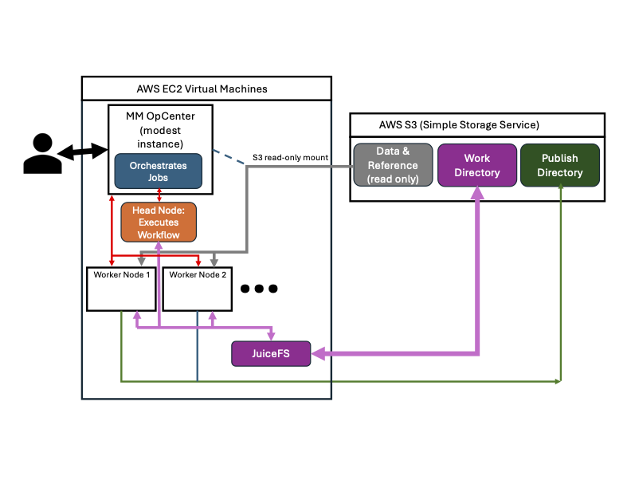

Launch Setup
Pre-Built Template vs MMCloud Air vs Float CLI
Methods
For this course, we have already set up the full configuration for the pipleines. To submit, go to the MMCloud Opcenter and and launch your designated pipeline.
Launching in MMCloud Air is fully web-based allowing users to launch the pipeline from the web in a GUI.
Launching from the Float CLI gives you the most control. You have full control of the launch, but need to be familiar with the float cli.
Workflow Architecture

nf-core/scrnaseq Setup
Launch Methods
- Sign in to the MMCloud Opcenter with your given credentials.
- Select Job Templates from the left hand panel.
- Select Private.
- Select the Template for
scrnaseqthat matches your user name. - Submit!
Step 1: Name and Job Resources
Nextflow generic workflow
Job Name
user<number>-scrnaseq-run
MMCloud OpCenter
mdibl-workshop-opcenter
Storage
mdibl-workshop
Security Group
tbd
Step 2: Parameters
Nextflow run command cli
nextflow run nf-core/scrnaseq -r 2.7.0
VM instance policy for worker nodes
Note
spotOnly can be set for maximum savings
[spotFirst=true,retryLimit=5,retryInterval=300s]
Staged Mount
https://mdibl-workshop.s3.us-east-1.amazonaws.com
Output Bucket
s3://workshop-user<number>/scranseq-output/
Input sample .csv file
Note
Young_Y1_lung_29w sample has been removed. The authors found batch effects in this sample and excluded it in downstream analysis. Might be good to keep in as a teaching tool, but their method of batch detection would need to be incorporated into our workflow, so we're leaving it out.
sample,fastq_1,fastq_2
Young_Y1_kidney_29w,/staged-files-1/data/SRR9320581/Y1K1_R1_001.fastq.gz,/staged-files-1/data/SRR9320581/Y1K1_R2_001.fastq.gz
Young_Y1_kidney_29w,/staged-files-1/data/SRR9320582/Y1K2_R1_001.fastq.gz,/staged-files-1/data/SRR9320582/Y1K2_R2_001.fastq.gz
Young_Y1_spleen_29w,/staged-files-1/data/SRR9320585/Y1S1_R1_001.fastq.gz,/staged-files-1/data/SRR9320585/Y1S1_R2_001.fastq.gz
Young_Y3_kidney_31w,/staged-files-1/data/SRR9320586/Y3K1_R1_001.fastq.gz,/staged-files-1/data/SRR9320586/Y3K1_R2_001.fastq.gz
Young_Y3_kidney_31w,/staged-files-1/data/SRR9320587/Y3K2_R1_001.fastq.gz,/staged-files-1/data/SRR9320587/Y3K2_R2_001.fastq.gz
Young_Y3_lung_31w,/staged-files-1/data/SRR9320588/Y3RL1_R1_001.fastq.gz,/staged-files-1/data/SRR9320588/Y3RL1_R2_001.fastq.gz
Young_Y3_lung_31w,/staged-files-1/data/SRR9320589/Y3RL2_R1_001.fastq.gz,/staged-files-1/data/SRR9320589/Y3RL2_R2_001.fastq.gz
Young_Y3_spleen_31w,/staged-files-1/data/SRR9320590/Y3S1_R1_001.fastq.gz,/staged-files-1/data/SRR9320590/Y3S1_R2_001.fastq.gz
Young_Y3_spleen_31w,/staged-files-1/data/SRR9320591/Y3S2_R1_001.fastq.gz,/staged-files-1/data/SRR9320591/Y3S2_R2_001.fastq.gz
Young_Y4_kidney_34w,/staged-files-1/data/SRR9320592/Y4K1_R1_001.fastq.gz,/staged-files-1/data/SRR9320592/Y4K1_R2_001.fastq.gz
Young_Y4_kidney_34w,/staged-files-1/data/SRR9320593/Y4K2_R1_001.fastq.gz,/staged-files-1/data/SRR9320593/Y4K2_R2_001.fastq.gz
Young_Y4_lung_34w,/staged-files-1/data/SRR9320594/Y4RL1_R1_001.fastq.gz,/staged-files-1/data/SRR9320594/Y4RL1_R2_001.fastq.gz
Young_Y4_lung_34w,/staged-files-1/data/SRR9320595/Y4RL2_R1_001.fastq.gz,/staged-files-1/data/SRR9320595/Y4RL2_R2_001.fastq.gz
Young_Y4_spleen_34w,/staged-files-1/data/SRR9320596/Y4S1_R1_001.fastq.gz,/staged-files-1/data/SRR9320596/Y4S1_R2_001.fastq.gz
Young_Y4_spleen_34w,/staged-files-1/data/SRR9320597/Y4S2_R1_001.fastq.gz,/staged-files-1/data/SRR9320597/Y4S2_R2_001.fastq.gz
Young_Y5_kidney_34w,/staged-files-1/data/SRR9320598/Y5K1_R1_001.fastq.gz,/staged-files-1/data/SRR9320598/Y5K1_R2_001.fastq.gz
Young_Y5_kidney_34w,/staged-files-1/data/SRR9320599/Y5K2_R1_001.fastq.gz,/staged-files-1/data/SRR9320599/Y5K2_R2_001.fastq.gz
Young_Y5_lung_34w,/staged-files-1/data/SRR9320600/Y5RL1_R1_001.fastq.gz,/staged-files-1/data/SRR9320600/Y5RL1_R2_001.fastq.gz
Young_Y5_lung_34w,/staged-files-1/data/SRR9320601/Y5RL2_R1_001.fastq.gz,/staged-files-1/data/SRR9320601/Y5RL2_R2_001.fastq.gz
Young_Y5_spleen_34w,/staged-files-1/data/SRR9320602/Y5S1_R1_001.fastq.gz,/staged-files-1/data/SRR9320602/Y5S1_R2_001.fastq.gz
Young_Y5_spleen_34w,/staged-files-1/data/SRR9320603/Y5S2_R1_001.fastq.gz,/staged-files-1/data/SRR9320603/Y5S2_R2_001.fastq.gz
Old_O1_kidney_88w,/staged-files-1/data/SRR9320604/O1K1_R1_001.fastq.gz,/staged-files-1/data/SRR9320604/O1K1_R2_001.fastq.gz
Old_O1_kidney_88w,/staged-files-1/data/SRR9320605/O1K2_R1_001.fastq.gz,/staged-files-1/data/SRR9320605/O1K2_R2_001.fastq.gz
Old_O1_lung_88w,/staged-files-1/data/SRR9320606/O1RL1_R1_001.fastq.gz,/staged-files-1/data/SRR9320606/O1RL1_R2_001.fastq.gz
Old_O1_lung_88w,/staged-files-1/data/SRR9320607/O1RL2_R1_001.fastq.gz,/staged-files-1/data/SRR9320607/O1RL2_R2_001.fastq.gz
Old_O1_spleen_88w,/staged-files-1/data/SRR9320608/O1S1_R1_001.fastq.gz,/staged-files-1/data/SRR9320608/O1S1_R2_001.fastq.gz
Old_O1_spleen_88w,/staged-files-1/data/SRR9320609/O1S2_R1_001.fastq.gz,/staged-files-1/data/SRR9320609/O1S2_R2_001.fastq.gz
Old_O2_kidney_91w,/staged-files-1/data/SRR9320610/O2K1_R1_001.fastq.gz,/staged-files-1/data/SRR9320610/O2K1_R2_001.fastq.gz
Old_O2_kidney_91w,/staged-files-1/data/SRR9320611/O2K2_R1_001.fastq.gz,/staged-files-1/data/SRR9320611/O2K2_R2_001.fastq.gz
Old_O2_lung_91w,/staged-files-1/data/SRR9320612/O2RL1_R1_001.fastq.gz,/staged-files-1/data/SRR9320612/O2RL1_R2_001.fastq.gz
Old_O2_lung_91w,/staged-files-1/data/SRR9320613/O2RL2_R1_001.fastq.gz,/staged-files-1/data/SRR9320613/O2RL2_R2_001.fastq.gz
Old_O2_spleen_91w,/staged-files-1/data/SRR9320614/O2S1_R1_001.fastq.gz,/staged-files-1/data/SRR9320614/O2S1_R2_001.fastq.gz
Old_O2_spleen_91w,/staged-files-1/data/SRR9320615/O2S2_R1_001.fastq.gz,/staged-files-1/data/SRR9320615/O2S2_R2_001.fastq.gz
Old_O3_kidney_93w,/staged-files-1/data/SRR9320616/O3K1_R1_001.fastq.gz,/staged-files-1/data/SRR9320616/O3K1_R2_001.fastq.gz
Old_O3_lung_93w,/staged-files-1/data/SRR9320617/O3RL1_R1_001.fastq.gz,/staged-files-1/data/SRR9320617/O3RL1_R2_001.fastq.gz
Old_O3_spleen_93w,/staged-files-1/data/SRR9320618/O3S1_R1_001.fastq.gz,/staged-files-1/data/SRR9320618/O3S1_R2_001.fastq.gz
Old_O3_spleen_93w,/staged-files-1/data/SRR9320619/O3S2_R1_001.fastq.gz,/staged-files-1/data/SRR9320619/O3S2_R2_001.fastq.gz
Input parameter .yml file
multiqc_title: 'scRNAseq-workshop'
aligner: 'cellranger'
protocol: '10XV2'
fasta: '/staged-files-1/reference/Mus_musculus.GRCm39.dna.primary_assembly.fa.gz'
gtf: '/staged-files-1/reference/Mus_musculus.GRCm39.112.gtf.gz'
cellranger_index: '/staged-files-1/reference/Mus_musculus.GRCm39-cellranger-index/'
skip_emptydrops: true
Please refer to MMCloud Docs for instructions
Cost Summary
| onDemand/Spot | Time | Cost |
|---|---|---|
| OnDemand | 3h43m22s | $54.773 |
| SpotFirst | 3h42m56s | $20.473 |
mdibl/scscape Setup
Launch Methods
- Sign in to the MMCloud Opcenter with your given credentials.
- Select Job Templates from the left hand panel.
- Select Private.
- Select the Template for
scscapethat matches your user name. - Submit!
Step 1: Name and Job Resources
Nextflow generic workflow
Job Name
user<number>-scscape-run
MMCloud OpCenter
mdibl-workshop-opcenter
Storage
mdibl-workshop
Security Group
tbd
Step 2: Parameters
Nextflow run command cli
nextflow run mdibl/scscape -r main
VM instance policy for worker nodes
Note
spotOnly can be set for maximum savings
[spotFirst=true,retryLimit=5,retryInterval=300s]
Staged Mount
https://mdibl-workshop.s3.us-east-1.amazonaws.com
Output Bucket
s3://workshop-user<number>/scscape-output/
Input sample .csv file
id,data_directory,mt_cc_rm_genes
Old_O1_kidney_88w,/staged-files-1/admin/new-prebake/scrnaseq_out/cellranger/count/Old_O1_kidney_88w/outs/filtered_feature_bc_matrix/,/staged-files-1/reference/AuxillaryGeneList_mm.csv
Old_O1_lung_88w,/staged-files-1/admin/new-prebake/scrnaseq_out/cellranger/count/Old_O1_lung_88w/outs/filtered_feature_bc_matrix/,/staged-files-1/reference/AuxillaryGeneList_mm.csv
Old_O1_spleen_88w,/staged-files-1/admin/new-prebake/scrnaseq_out/cellranger/count/Old_O1_spleen_88w/outs/filtered_feature_bc_matrix/,/staged-files-1/reference/AuxillaryGeneList_mm.csv
Old_O2_kidney_91w,/staged-files-1/admin/new-prebake/scrnaseq_out/cellranger/count/Old_O2_kidney_91w/outs/filtered_feature_bc_matrix/,/staged-files-1/reference/AuxillaryGeneList_mm.csv
Old_O2_lung_91w,/staged-files-1/admin/new-prebake/scrnaseq_out/cellranger/count/Old_O2_lung_91w/outs/filtered_feature_bc_matrix/,/staged-files-1/reference/AuxillaryGeneList_mm.csv
Old_O2_spleen_91w,/staged-files-1/admin/new-prebake/scrnaseq_out/cellranger/count/Old_O2_spleen_91w/outs/filtered_feature_bc_matrix/,/staged-files-1/reference/AuxillaryGeneList_mm.csv
Old_O3_kidney_93w,/staged-files-1/admin/new-prebake/scrnaseq_out/cellranger/count/Old_O3_kidney_93w/outs/filtered_feature_bc_matrix/,/staged-files-1/reference/AuxillaryGeneList_mm.csv
Old_O3_lung_93w,/staged-files-1/admin/new-prebake/scrnaseq_out/cellranger/count/Old_O3_lung_93w/outs/filtered_feature_bc_matrix/,/staged-files-1/reference/AuxillaryGeneList_mm.csv
Old_O3_spleen_93w,/staged-files-1/admin/new-prebake/scrnaseq_out/cellranger/count/Old_O3_spleen_93w/outs/filtered_feature_bc_matrix/,/staged-files-1/reference/AuxillaryGeneList_mm.csv
Young_Y1_kidney_29w,/staged-files-1/admin/new-prebake/scrnaseq_out/cellranger/count/Young_Y1_kidney_29w/outs/filtered_feature_bc_matrix/,/staged-files-1/reference/AuxillaryGeneList_mm.csv
Young_Y1_spleen_29w,/staged-files-1/admin/new-prebake/scrnaseq_out/cellranger/count/Young_Y1_spleen_29w/outs/filtered_feature_bc_matrix/,/staged-files-1/reference/AuxillaryGeneList_mm.csv
Young_Y3_kidney_31w,/staged-files-1/admin/new-prebake/scrnaseq_out/cellranger/count/Young_Y3_kidney_31w/outs/filtered_feature_bc_matrix/,/staged-files-1/reference/AuxillaryGeneList_mm.csv
Young_Y3_lung_31w,/staged-files-1/admin/new-prebake/scrnaseq_out/cellranger/count/Young_Y3_lung_31w/outs/filtered_feature_bc_matrix/,/staged-files-1/reference/AuxillaryGeneList_mm.csv
Young_Y3_spleen_31w,/staged-files-1/admin/new-prebake/scrnaseq_out/cellranger/count/Young_Y3_spleen_31w/outs/filtered_feature_bc_matrix/,/staged-files-1/reference/AuxillaryGeneList_mm.csv
Young_Y4_kidney_34w,/staged-files-1/admin/new-prebake/scrnaseq_out/cellranger/count/Young_Y4_kidney_34w/outs/filtered_feature_bc_matrix/,/staged-files-1/reference/AuxillaryGeneList_mm.csv
Young_Y4_lung_34w,/staged-files-1/admin/new-prebake/scrnaseq_out/cellranger/count/Young_Y4_lung_34w/outs/filtered_feature_bc_matrix/,/staged-files-1/reference/AuxillaryGeneList_mm.csv
Young_Y4_spleen_34w,/staged-files-1/admin/new-prebake/scrnaseq_out/cellranger/count/Young_Y4_spleen_34w/outs/filtered_feature_bc_matrix/,/staged-files-1/reference/AuxillaryGeneList_mm.csv
Young_Y5_kidney_34w,/staged-files-1/admin/new-prebake/scrnaseq_out/cellranger/count/Young_Y5_kidney_34w/outs/filtered_feature_bc_matrix/,/staged-files-1/reference/AuxillaryGeneList_mm.csv
Young_Y5_lung_34w,/staged-files-1/admin/new-prebake/scrnaseq_out/cellranger/count/Young_Y5_lung_34w/outs/filtered_feature_bc_matrix/,/staged-files-1/reference/AuxillaryGeneList_mm.csv
Young_Y5_spleen_34w,/staged-files-1/admin/new-prebake/scrnaseq_out/cellranger/count/Young_Y5_spleen_34w/outs/filtered_feature_bc_matrix/,/staged-files-1/reference/AuxillaryGeneList_mm.csv
Input parameter .yml file
segmentation_sheet: "/staged-files-1/reference/Segmentation.csv"
gene_identifier: "gene_name"
min_cells: 3
min_features: 200
nfeature_lower: 10
nfeature_upper: 0
ncount_lower: 10
ncount_upper: 0
max_mito_pct: 10
vars_2_regress": "nCount_RNA,nFeature_RNA,percent.mt,S.Score,G2M.Score"
features_2_scale: "VF"
scale_method: "SCT"
pcMax: null
integration_method: "Harmony"
resolutions: "0.05,0.1,0.3,0.5,0.7,0.9,1.2,1.5"
makeLoupe: true
eula_agreement: "Agree"
Please refer to MMCloud Docs for instructions
Cost Summary
| onDemand/Spot | Time | Cost |
|---|---|---|
| OnDemand | 5h36m20s | $5.5854 |
| SpotFirst | 8h47m50s | $4.3996 |